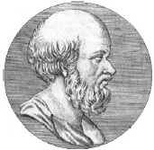

Antik Yunan’da çoğu bilim insanı dünyanın yuvarlak olduğuna inanıyordu. Fakat hiçbiri, İskenderiye’nin baş kütüphanecisi Eratosthenes’in (MÖ 276-194) dünyanın büyüklüğünü ölçmek için dahiyane bir yöntem geliştirdiği MÖ III. yüzyıla dek onun ne kadar büyük olduğunu bilememiştir.

Eratosthenes, Mısır’da Asvan yakınlarında özel bir kuyu biliyordu. Yılın en uzun günü olan 21 Haziran günü tam öğle vaktinde güneş ışınları kuyunun dibine kadar ulaşıyordu. Bu, güneşin tam tepede olduğu anlamına geliyordu. Eratosthenes, eğer güneş Asvan’da tam tepedeyse, o zaman ışınların biraz daha kuzeyde olan İskenderiye’de belli bir açıyla yere düşmesi gerektiğini fark etti. Güneşin merkezden sapış açısını ölçebilirse, o zaman yeryüzünün büyüklüğünü tahmin etmek için gereken ipucuna sahip olacaktı. Bunun için, İskenderiye’de bir 21 Haziran günü güneş tam tepedeyken bir sopa aldı ve sopanın gölgesinin yere düşme açısını hesapladı.
Eratosthenes, bu açının iki şehir ile dünyanın merkezi arasındaki açıya eşit olduğunu biliyordu. Dolayısıyla, iki şehri birbirinden dünyanın kaçta kaçlık bir bölümünün ayırdığını belirleyebilmek için, bulduğu açı ölçüsünü bir dairenin iç açılarının toplamı olan üç yüz altmışa böldü. Cevap ellide birdi. Diğer bir deyişle, Asvan ve İskenderiye arasında elli defa gidip gelirseniz o zaman dünyanın çevresi kadar yürümüş olacaktınız.
Geriye kalan tek şey, iki şehir arasındaki mesafeyi tam olarak ölçmekti. Eratosthenes, şaşmaz bir şekilde eşit adımlar atmak için eğitilmiş profesyonel bir yürüyüşçü tuttu. Yürüyüşçünün adımlarının ölçüsünden yola çıkarak dünyanın çevresinin tahmini olarak 24.700 mil olduğunu tespit etti. Bugün Eratosthenes’in iki bin yıl önce geliştirdiği ilkeleri kullanan modern araçlar ekvatorun uzunluğunu 24.902 mil olarak hesaplıyor.
Eratosthenes’in zamanında bilinen dünya İspanya’dan Hindistan’a uzanıyordu. Eratosthenes dünyanın geri kalanını çok geniş bir okyanusun kapladığına inanıyordu. Okyanus bu denli devasa olmasaydı, Eratosthenes batıya doğru yelken açarak İspanya’dan Hindistan’a ulaşmanın mümkün olabileceğini düşünüyordu. Kristof Kolomb’a 1492 yılında o ünlü yolculuğa çıkmak için ilham veren de işte bu fikir oldu.
EK BİLGİLER:
1. Eratosthenes tarihi olayları kronolojik bir sıraya koymaya ciddi bir biçimde teşebbüs eden ilk tarihçiydi. Bugün ilkçağa dair tarihlerin çoğu için onun belirledikleri temel alınıyor.
2. Enlem, boylam, gam (müzik) ve asal sayılar gibi pek çok modern kavramı da Eratosthenes’e borçluyuz.
3. Eratosthenes’in zamanında bilim insanları ona “Beta” lakabını takmışlardı; ama içlerindeki en karizmatik kişi olduğu için değil. Eratosthenes’in o kadar fazla ilgi alanı vardı ki çağdaşları onu her şeye yüzeysel yaklaşan bir amatör olarak görüyorlardı. Onlara göre o ikinci sınıf biri, bir “beta” idi.